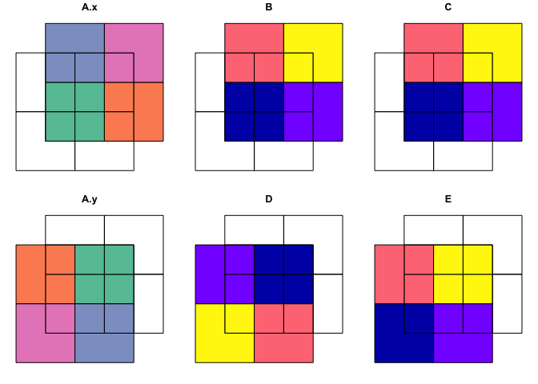

sfhelpers is a R package including functions helping to
run routines related primarily to simple features (sf)
, but also to spatial objects of other classes / packages ( raster,
sp,
stars,
terra
). sfhelpers is motivated by multiple requests for code or
advice related to sf. By publishing sfhelpers
I hope to at least partly satisfy these demands. sfhelpers
is still very much in the development phase; it may or may not go any
further. Suggestions are welcome.
# install package devtools if not yet installed
# install.packages("devtools")
# install fast from GitHub without vignettes (not recommended)
# devtools::install_github("a-benini/sfhelpers")
# recommended: installation from GitHub including vignettes:
pkgs_4_vignettes <- c("magrittr", "dplyr")
# packages required to build sfhelpers's vignettes from GitHup repository
new_pkgs_4_vignettes <- pkgs_4_vignettes[!pkgs_4_vignettes %in% installed.packages()]
# among these packages the ones not yet installed
if(length(new_pkgs_4_vignettes) > 0){install.packages(new_pkgs_4_vignettes)}
# install the still missing packages
devtools::install_github("a-benini/sfhelpers", build_vignettes = TRUE)
# install sfhelpers from GitHup with its vignettessfhelpers::st_or is a sf equivalent of QGIS
Union. st_or returns a geometry set containing overlapping
and non-overlapping parts of two input sf objects (or
sfcs).
library(sf)
#> Linking to GEOS 3.9.1, GDAL 3.3.2, PROJ 8.1.1; sf_use_s2() is TRUE
library(sfhelpers)
# the two included demo sf-objects have partly identically named attribute columns
st_agr(poly_1)
#> A B C
#> <NA> <NA> <NA>
#> Levels: constant aggregate identity
st_agr(poly_2)
#> A D E
#> <NA> <NA> <NA>
#> Levels: constant aggregate identity
# st_or() suffixes by default originally identically named attribute columns
st_or(x = poly_1, y = poly_2) %>% st_drop_geometry()
#> Warning: attribute variables are assumed to be spatially constant throughout all
#> geometries
#> A.x B C A.y D E
#> 1 Pq 1 1983 z 48 2015
#> 2 Pq 1 1983 y 36 2016
#> 3 Qr 2 1984 y 36 2016
#> 4 Pq 1 1983 x 24 2017
#> 5 Rs 3 1985 x 24 2017
#> 6 Pq 1 1983 w 12 2018
#> 7 Qr 2 1984 w 12 2018
#> 8 Rs 3 1985 w 12 2018
#> 9 St 4 1986 w 12 2018
#> 10 Qr 2 1984 <NA> NA NA
#> 11 Rs 3 1985 <NA> NA NA
#> 12 St 4 1986 <NA> NA NA
#> 13 <NA> NA NA z 48 2015
#> 14 <NA> NA NA y 36 2016
#> 15 <NA> NA NA x 24 2017
st_or(poly_1, poly_2) %>% plot()
#> Warning: attribute variables are assumed to be spatially constant throughout all
#> geometries
For the rest of the functions included in sfhelpers see
here.